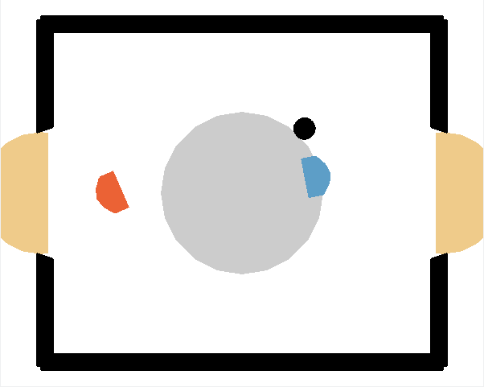
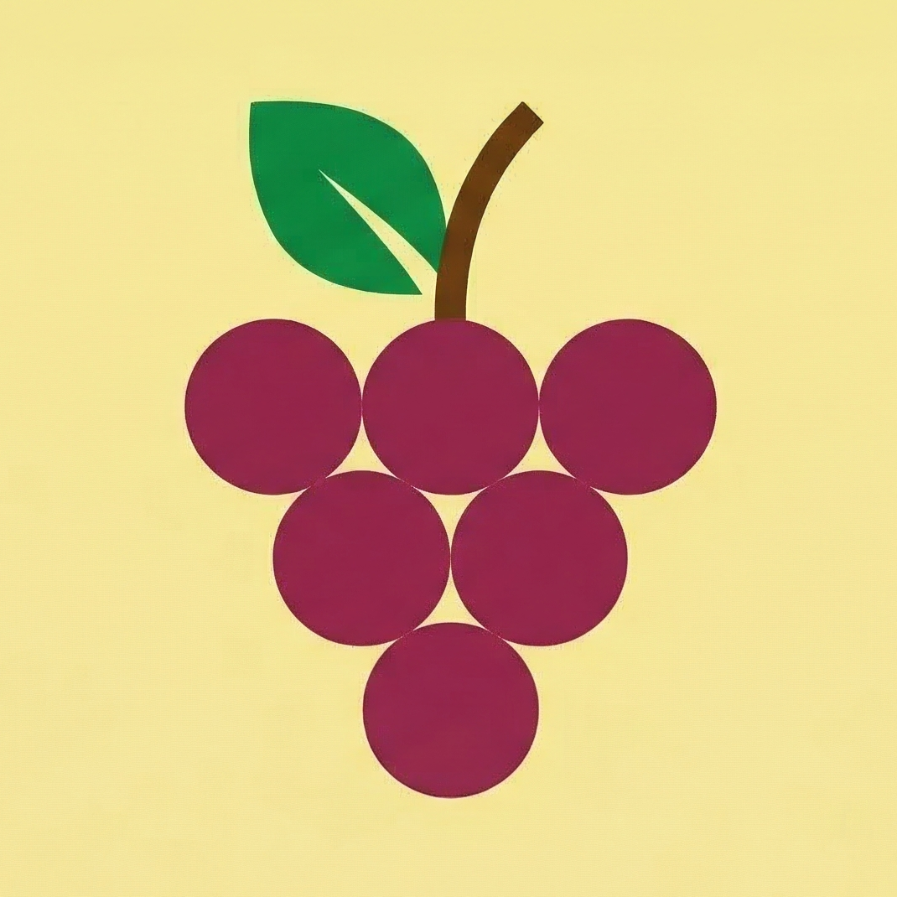
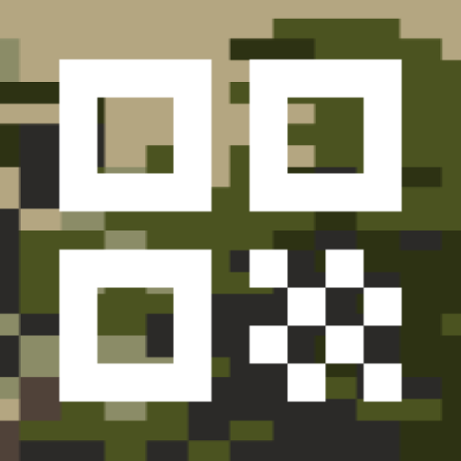
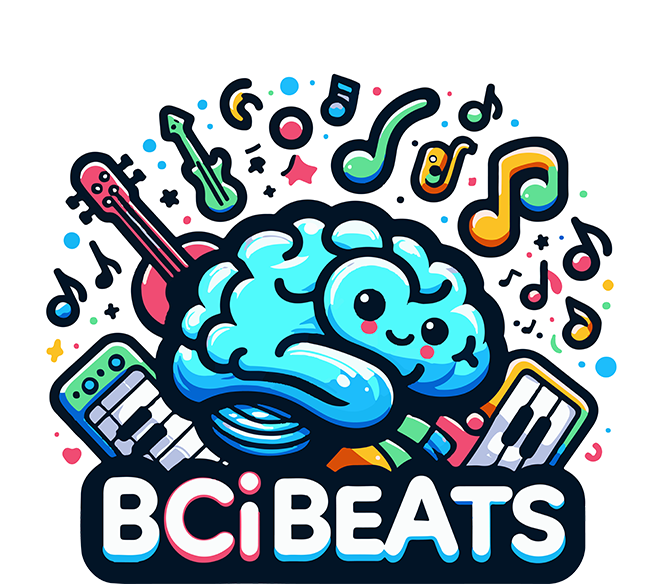
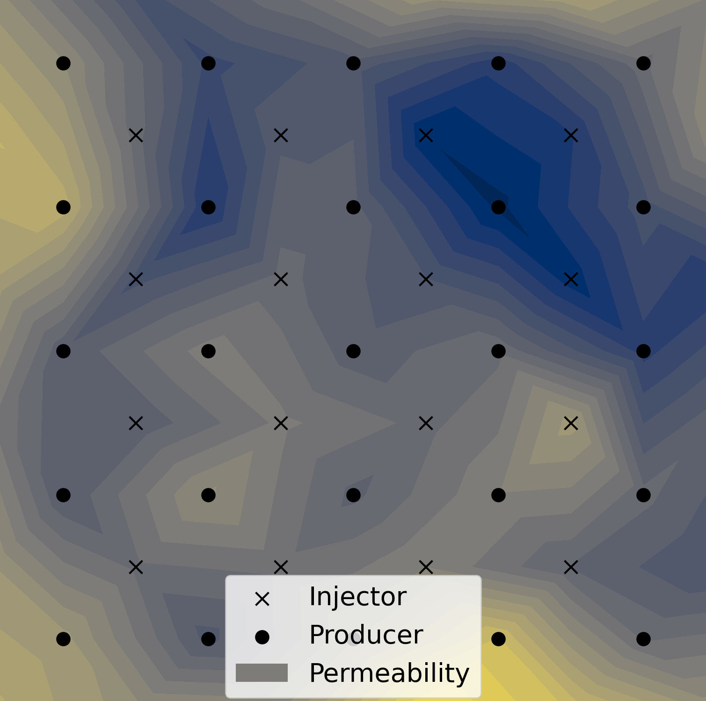
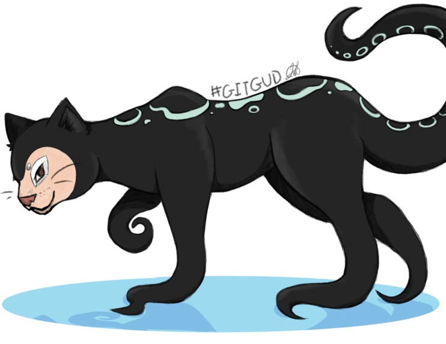

Projects
Course Projects

SAC - Simulated Air Hockey Agent
I developed a soft actor-critic agent for a two-player air hockey environment. I implemented the base algorithm by hand as well as adaptive entropy regularization and a distributional value function. The agent was trained using self-play and competed against other agents in a final tournament.

Grapevine - Distributed Social Network Platform
We built a distributed social networking website that integrates with other nodes through a decentralized protocol. It allows users to create and view posts with friends from other sites using a RESTful Django backend and Vue.js. I developed the backend architecture to enable interoperability.

QArmy - QR Code Collection App
We created an app for collecting unique QR codes. By scanning new codes, users enlist members to their army and gain points to climb the leaderboard. The app was developed using agile principles, utilizes robust software design patterns, and integrates GitHub workflows. My contributions involved project management, implementing a modular app architecture, and unit testing.
Hackathons

BCI Beats - BCI Music Composition App
We created an app that allows children with motor impairments to create music using BCI devices. Kids can overlay samples from different instruments by selecting buttons using brain signals. We designed a prototype for the Glenrose Rehabilitation Hospital that was later completed and released. I built game components in Unity to interact smoothly with the backend.
Devpost
MeanEstimators - Predicting Water Well Production Rates
We won $250 for predicting flow rates of producer wells from past flow data and geological information. We modelled the production using a reciprocal power function. We learned the coefficients and predicted daily fluctuations with ridge regression using the neighbouring wells and geological data.
Kaggle
GitGud - 3D Tic-Tac-Toe-Tub Game
We extended traditional tic-tac-toe into a 4x4x4 grid in 3D space. This leads to a more complex, challenging game with a functional AI opponent and 2-player mode, as well as a handmade 3D graphics engine. I contributed primarily through product design, project management, and debugging.
Devpost